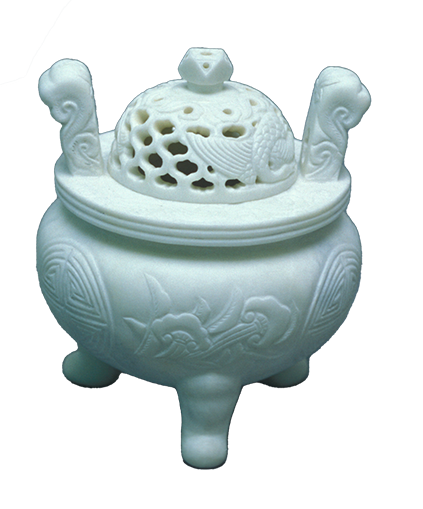

옥장
옥 종류의 돌을 이용하여 공예품을 만들어 내는 기술

연원
청동기 유적에서 발견되고 있는 옥석공예품과 삼국시대의 여러 고분에서 출토된 곱은옥, 구슬옥, 대롱옥 및 신라의 세 가지 보물 가운데 하나였던 진평왕의 옥허리띠를 통해 옥이 상류층의 중요한 장신구였음을 알 수 있다. 옥공예품은 조선시대까지만 하더라도 왕족계열과 특수계층에 한하여 지닐 수 있었다.
제작과정
채석, 디자인, 절단, 성형, 세부조각, 광택의 과정을 거쳐 작품이 완성되는데 쇠톱, 활빙개(활비비), 갈이틀, 물레 등 여러가지 연장이 사용된다.
특징
옥은 동양문화권에서 발달된 보석류로서 금·은과 함께 쓰여진 대표적인 보석이며, 음양오행의 다섯 가지 덕인 인(仁)·의(義)·지(智)·용(勇)·각(角)을 상징하는 장신구로 사용되었다. 또한 방위신에 예(禮)를 베푸는 예기(禮器)를 비롯하여 사회계급의 신분을 구분하는 드리개와 악기인 옥경(玉磬), 약재 및 의료용구 등 여러 가지로 사용되었다.
전승자
| 보유구분 | 이름 | 성별 | 기예능 | 지역 | 인정일 |
|---|---|---|---|---|---|
| 보유자 | 장주원(張周元) | 남 | 옥장 | 전남 | 1996-02-01 |
| 전승교육사 | 장석 | 남 | 옥장 | 경기 | 2004-04-16 |
소재지
전남